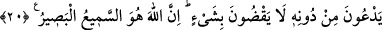

YAKLAŞAN GÜNLE
ONLARI UYAR!
17. Bugün herkese kazandığının karşılığı verilir. Bugün haksızlık yoktur.
Şüphesiz Allah, hesabı çarçabuk görendir.
18. Yaklaşan gün hususunda onları uyar! Çünkü o onda dehşet içinde
yutkunurken yürekleri ağızlarına gelmiştir. Zalimlerin ne dostu ne de sözü dinlenir
şefaatçısı vardır.
19. Allah, gözlerin hain bakışını ve kalplerin gizlediğini bilir.
20. Allah, adaletle hükmeder. O’nu bırakıp taptıkları ise, hiçbir şeye
hükmedemezler. Şüphesiz Allah, hakkıyla işiten ve görendir.
“Bugün herkese, kazandığının karşılığı verilir:” O gün gerek müttaki gerek
günahkâr, gerek hayırlı gerek şerli bütün nefislere kazandığının karşılığı verilecektir.
“Bugün” sevapları azaltmak ya da azapları çoğaltmak şeklinde hiçbir “haksızlık
yoktur.” Yâni ne kimsenin sevâbından eksiltilir ne de kimsenin cezası artırılır; ne
birinin günahıyla birisi tutulur, ne iyiliğe karşılık kötülük verilir.
“Allah, hesabı çabuk görendir.” Allah hesabını çabuk görür. Çünkü O’nu meşgul
edecek hiçbir şey, hiçbir hal söz konusu değildir. O kadar çok olmasına rağmen bütün
mahlukatı en kısa zamanda hesâba çeker ve her birine müstehak olduğu şeyi sür’atle
ulaştırır. Bu mânâya göre ifâde, “Bugün herkese, kazandığının karşılığı verilir”
sözünün illetini göstermiş olmaktadır. Çünkü bu günün bizâtihî “kavuşma günü” ve
“ortaya çıkış günü” olması, her şeyin o gün vâkî olacak olmasını ihtimalden uzak
gösterebilir. İbn Abbas (r.a.)’dan rivâyet edildiğine göre: “Mahlukat hesaba çekilmeye
başlandığında, cennetlik olanları cennette, cehennemlik olanları da cehennemde kaylûle
yapıyor olacak.” Kaylûle, gün ortasında yapılan uyku demektir.
Keşfü’l-esrâr’da der ki: Kim ki bir günün geleceğine ve o günde kendisine soru
sorulup cevap alınacağına, hesap ve itab olunacağına inanırsa, gece ve gündüz rahatı
kaçar, sürekli işle meşgul olur. Tasarruf terazisini elinden bırakır. Kimsenin kusuruna